<!DOCTYPE html>
<html>
  <head>
    <title>Engine Oil: Service and Repair — 2011 BMW 128i Coupe (E82) L6-3.0L (N52K) Service Manual | Operation CHARM</title>
    <meta name='description' content="Detailed repair manual for the 2011 BMW 128i Coupe (E82) L6-3.0L (N52K).">
    <link rel='stylesheet' href="../style.css">
    <meta name='viewport' content='width=device-width, initial-scale=1.0' />
  </head>
  <body>
    <div class='theme-colors header'>
      <div class='branding'><b>Operation CHARM</b>: Car repair manuals for everyone.</div>
<div class=breadcrumbs><a class='breadcrumb-part' href="../">Home</a> <b>&gt;&gt;</b> <a class='breadcrumb-part' href="../BMW/">BMW</a> <b>&gt;&gt;</b> <a class='breadcrumb-part' href="../BMW/2011/">2011</a> <b>&gt;&gt;</b> <a class='breadcrumb-part' href="../index.html">128i Coupe (E82) L6-3.0L (N52K)</a> <b>&gt;&gt;</b> <a class='breadcrumb-part' href="0.html">Repair and Diagnosis</a> <b>&gt;&gt;</b> <a class='breadcrumb-part' href="0.html#Maintenance/">Maintenance</a> <b>&gt;&gt;</b> <a class='breadcrumb-part' href="0.html#Maintenance/Fluids/">Fluids</a> <b>&gt;&gt;</b> <a class='breadcrumb-part' href="139.html">Engine Oil</a> <b>&gt;&gt;</b> <a class='breadcrumb-part' href="9005.html">Service and Repair</a></div></div>
<div class="theme-colors floaty-message lemon-message">
  <b style="font-size: 1.5em; color: gold">Manuals through 2025 now available!</b>
  <br><br>
  Our trusted friends have launched a new website named LEMON, which has newer manuals. It also contains all the CHARM manuals.
  <br><br>
  LEMON is the spiritual successor to  CHARM, I recommend you try it!
  <br><br>
  Link: <a style='white-space: nowrap' href="../missing-page">lemon-manuals.la</a> or <a style='white-space: nowrap' href="../missing-page">lemon-manuals.org.ua</a>
  <br><br>
  (Some people have issue connecting. LEMON is investigating. For now, use Firefox or change your DNS server)
  <br><br>
  Or, hide this message: <a href="../missing-page">temporarily</a> or <a href="../missing-page">permanently</a>
</div>
<div class='main'>
<h1>Engine Oil: Service and Repair</h1><br><br><b>11 00 ... Engine Oil Service (N52K)</b><br><br><b>Special tools required:</b><br><br><br><div class='oxe-image'></div><br><br><br><br><br><b>WARNING:</b><br>Risk of scalding.<br>Carry out work on the vehicle only when wearing oil- and heat-resistant protective gloves incl. forearm protection, face guard and protective apron.<br><br><br><div class='oxe-image'></div><br><br><br><br><br><b>IMPORTANT:</b><br>Carry out the engine oil service only when the engine is at operating temperature.<br>Observe the exact engine oil filling capacity.<br>Overfilling the engine with engine oil will result in engine damage.<br>Checking and drip-off times (at least 10 minutes) must be observed.<br>Risk of damage.<br>Protect belt drive against dirt.<br>Cover with suitable materials.<br><br><br><div class='oxe-image'></div><br><br><br><br><br><b>Recycling:</b><br>Catch and dispose of drained engine oil in a suitable collecting vessel.<br>Observe country-specific waste disposal regulations.<br><br><br><div class='oxe-image'></div><br><br><br><br><br>Release <a href="128.html">oil filter</a> cover with special tool 11 9 240.<br>Tightening torque 11 42 1AZ.<br><br><b>NOTE:</b>  Engine oil flows out of the oil filter housing and back into the oil sump.<br><br><br><div class='oxe-image'>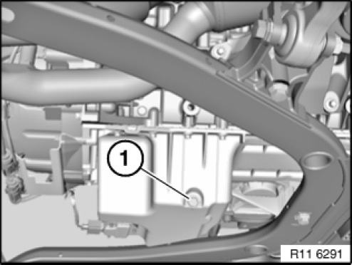</div><br><br><br><br><br><b>NOTE:</b><br>Presentation: without underbody protection.<br>Unclip service opening on underbody protection.<br>Remove screw plug (1) from oil sump and drain engine oil.<br>Tightening torque 11 13 1AZ.<br><br>Installation note:<br>Replace sealing ring.<br><br><br><div class='oxe-image'>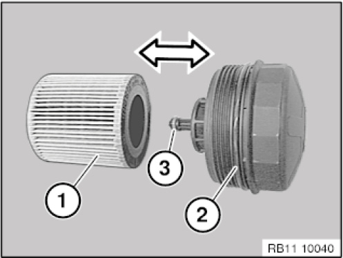</div><br><br><br><br><br>Remove and insert <a href="128.html">oil filter</a> element (1) in direction of arrow.<br><br>Installation note:<br>Replace <a href="128.html">oil filter</a> element (1) and sealing ring (2).<br>Replace gasket (3) and renew if necessary.<br><br><b>NOTE:</b>  Coat sealing rings (2,3) with engine oil.<br><br><br><div class='oxe-image'>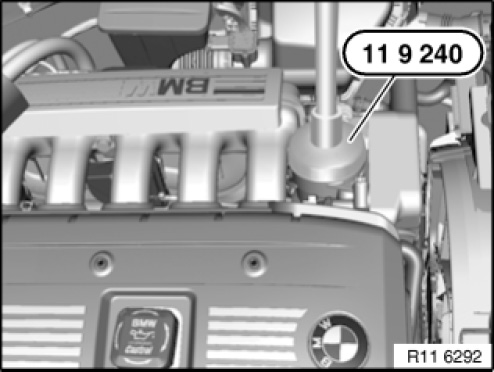</div><br><br><br><br><br>Secure <a href="128.html">oil filter</a> cover with special tool 11 9 240.<br>Tightening torque 11 42 1AZ.<br><br><b>NOTE:</b><br>Pour in engine oil.<br>Start engine and run at idle until oil pressure indicator light goes out.<br>Switch off engine<br>Check <a href="128.html">oil filter</a> cover and screw plug on oil sump for leaks.<br>Assemble engine.<br><br><br><div class='oxe-image'></div><br><br><br><br><br>Checking engine oil level:<br><span class='indent-2'>&#09;</span>-<span class='indent-5'>&#09;</span>Park vehicle on a horizontal surface<br><span class='indent-2'>&#09;</span>-<span class='indent-5'>&#09;</span>Allow engine to run at operating temperature for three minutes with increased engine speed (approx. 1100 rpm)<br><span class='indent-2'>&#09;</span>-<span class='indent-5'>&#09;</span>Read off engine oil level in instrument panel or on Control Display<br><span class='indent-2'>&#09;</span>-<span class='indent-5'>&#09;</span>Top up engine oil if necessary<br><br><h3>bˁ:</h3><div class='oxe-image'>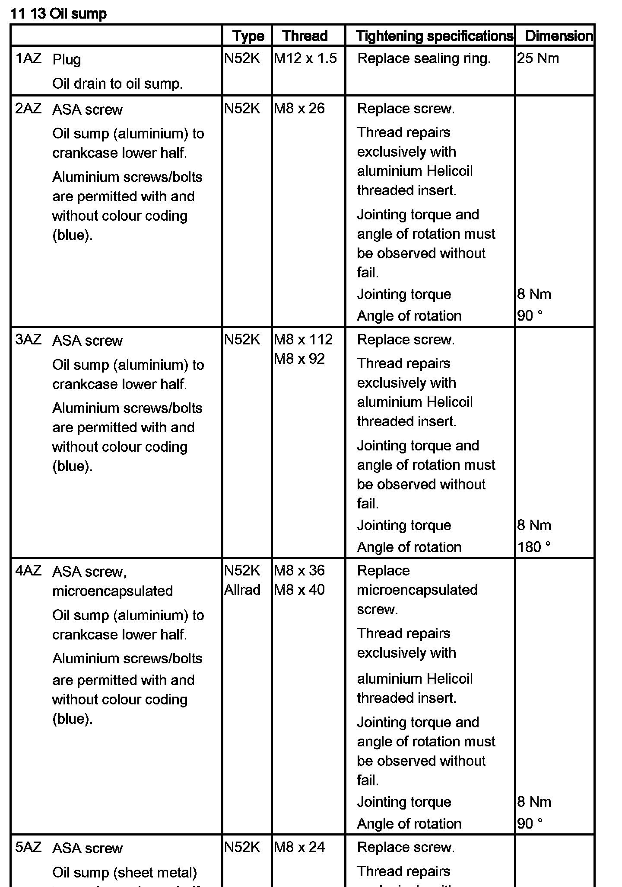</div><br><br><br><br><h3>�H�:</h3><div class='oxe-image'></div><br><br><br><br><h3>�ł:</h3><div class='oxe-image'>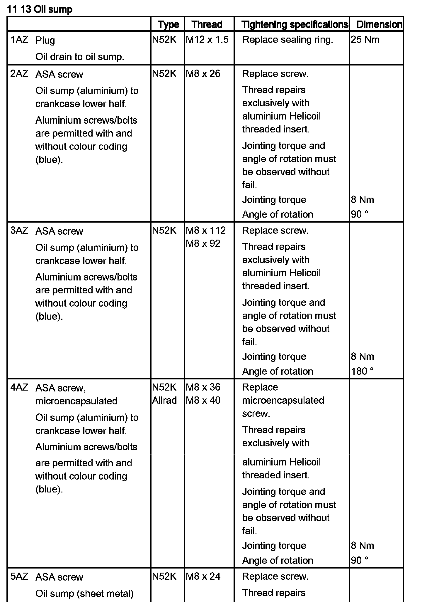</div><br><br><br><h3>�@�:</h3><div class='oxe-image'>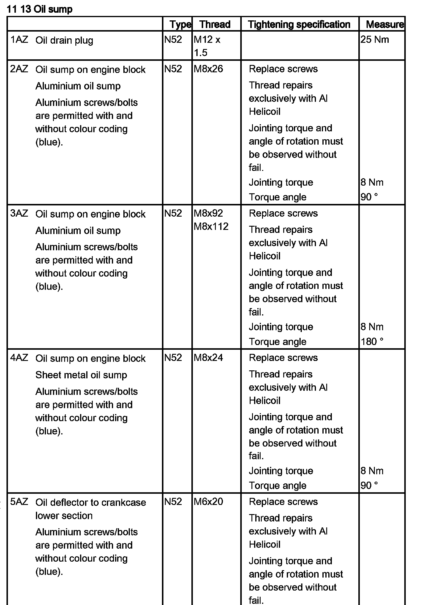</div><br><br><br><br><h3>���:</h3><div class='oxe-image'>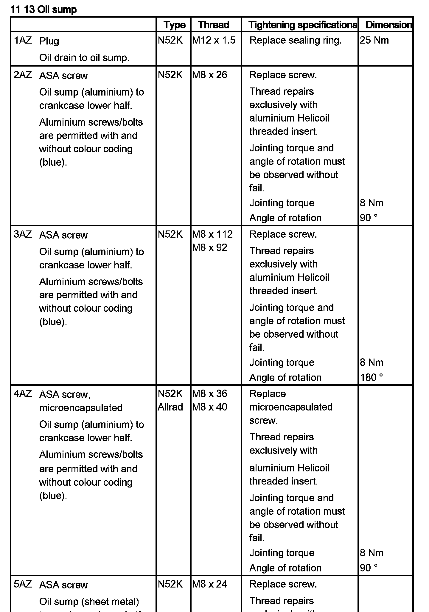</div><br><br><br><h3>T�:</h3><div class='oxe-image'></div><br><br><br><br><h3>�K�:</h3><div class='oxe-image'></div><br><br><br><br><h3>_Ʉ:</h3><div class='oxe-image'>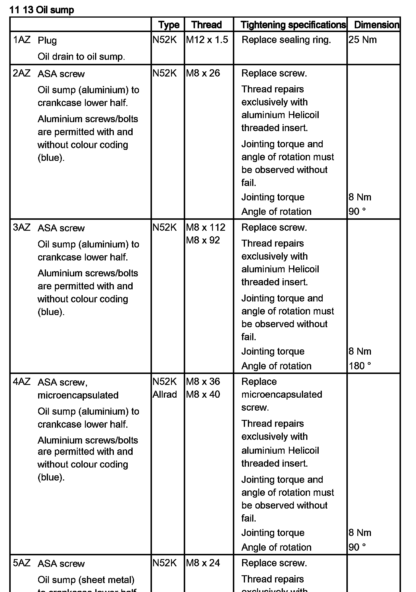</div><br><br><br><br><div class='oxe-image'>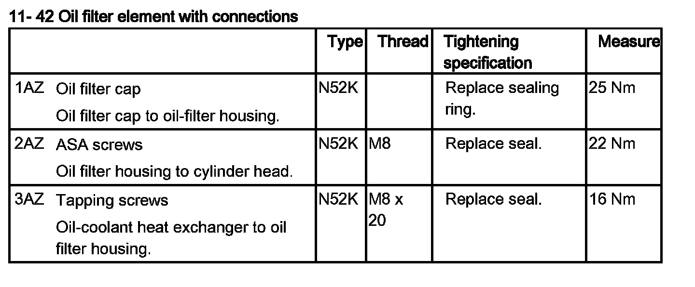</div><br><br><br><br><div class='oxe-image'>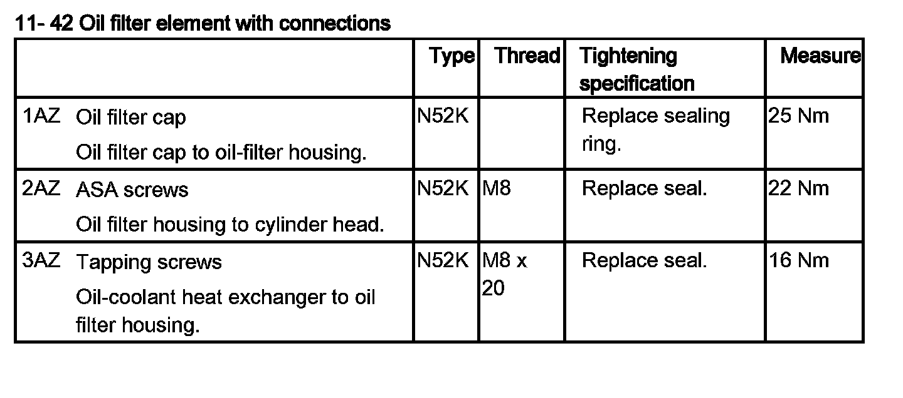</div><br><br><br><br><div class='oxe-image'>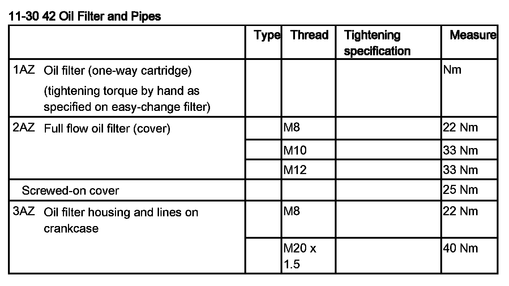</div><br><br><br><div class='oxe-image'>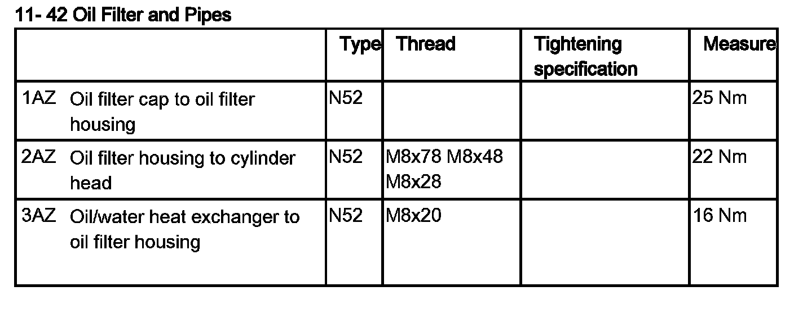</div><br><br><br><div class='oxe-image'>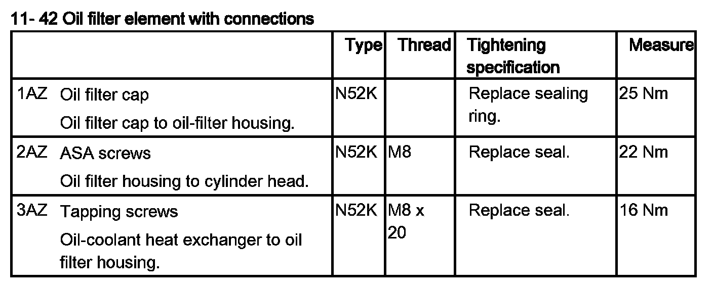</div><br><br><br><br><div class='oxe-image'>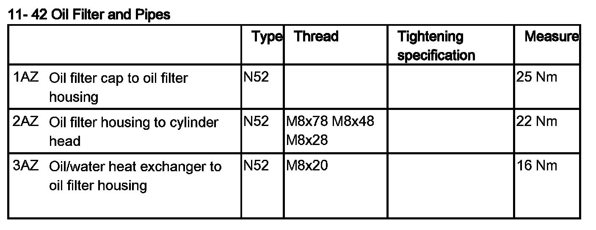</div><br><br><br><div class='oxe-image'>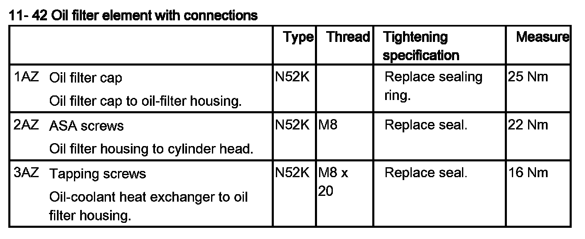</div><br><br><br><br><div class='oxe-image'>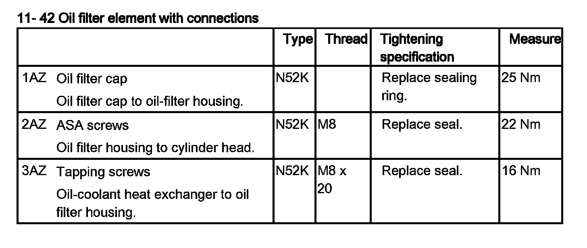</div><br><br><br><br><div class='oxe-image'></div><br><br><br></div>
<div class="theme-colors footer">
  <i>pro multis</i> · <a href="../about.html">About Operation CHARM</a>
</div>
<script src="../script.js"></script>
</body>
</html>
